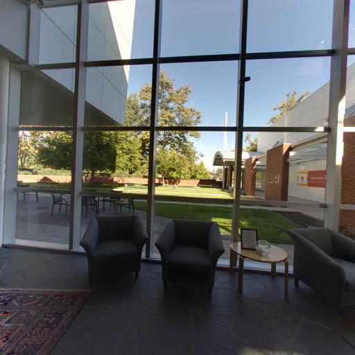
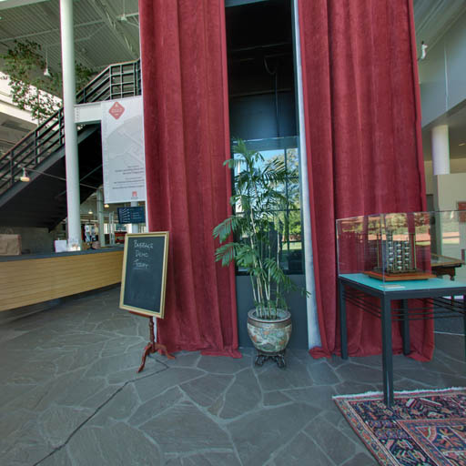
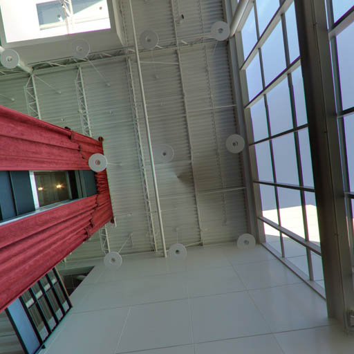
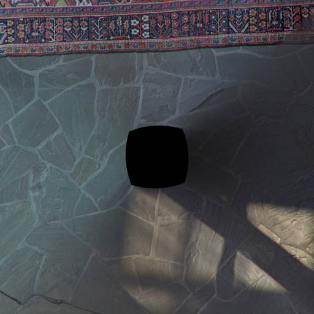
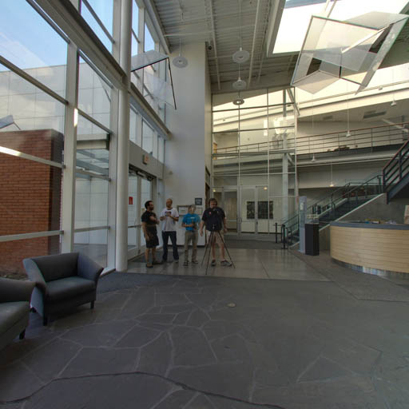
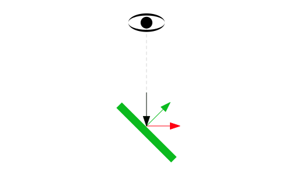

WebGL2 Cartes d'environnement (réflexions)
Cet article fait partie d’une série d’articles sur WebGL2. Le premier article commence par les bases. Cet article s’appuie sur l’article sur les cubemaps. Cet article utilise également des concepts couverts dans l’article sur l’éclairage. Si vous n’avez pas encore lu ces articles, vous voudrez peut-être les lire d’abord.
Une carte d’environnement représente l’environnement des objets que vous dessinez. Si vous dessinez une scène en extérieur, elle représenterait l’extérieur. Si vous dessinez des gens sur une scène, elle représenterait le lieu. Si vous dessinez une scène dans l’espace, ce seraient les étoiles. Nous pouvons implémenter une carte d’environnement avec un cube map si nous avons 6 images qui montrent l’environnement depuis un point dans l’espace dans les 6 directions du cubemap.
Voici une carte d’environnement du hall du Computer History Museum à Mountain View, Californie.






En se basant sur le code de l’article précédent, chargeons ces 6 images à la place des images que nous avions générées
// Créer une texture.
var texture = gl.createTexture();
gl.bindTexture(gl.TEXTURE_CUBE_MAP, texture);
const faceInfos = [
{
target: gl.TEXTURE_CUBE_MAP_POSITIVE_X,
url: 'resources/images/computer-history-museum/pos-x.jpg',
},
{
target: gl.TEXTURE_CUBE_MAP_NEGATIVE_X,
url: 'resources/images/computer-history-museum/neg-x.jpg',
},
{
target: gl.TEXTURE_CUBE_MAP_POSITIVE_Y,
url: 'resources/images/computer-history-museum/pos-y.jpg',
},
{
target: gl.TEXTURE_CUBE_MAP_NEGATIVE_Y,
url: 'resources/images/computer-history-museum/neg-y.jpg',
},
{
target: gl.TEXTURE_CUBE_MAP_POSITIVE_Z,
url: 'resources/images/computer-history-museum/pos-z.jpg',
},
{
target: gl.TEXTURE_CUBE_MAP_NEGATIVE_Z,
url: 'resources/images/computer-history-museum/neg-z.jpg',
},
];
faceInfos.forEach((faceInfo) => {
const {target, url} = faceInfo;
// Téléverser le canvas sur la face du cubemap.
const level = 0;
const internalFormat = gl.RGBA;
const width = 512;
const height = 512;
const format = gl.RGBA;
const type = gl.UNSIGNED_BYTE;
// configurer chaque face pour qu'elle soit immédiatement affichable
gl.texImage2D(target, level, internalFormat, width, height, 0, format, type, null);
// Charger une image de manière asynchrone
const image = new Image();
image.src = url;
image.addEventListener('load', function() {
// Maintenant que l'image est chargée, la téléverser dans la texture.
gl.bindTexture(gl.TEXTURE_CUBE_MAP, texture);
gl.texImage2D(target, level, internalFormat, format, type, image);
gl.generateMipmap(gl.TEXTURE_CUBE_MAP);
});
});
gl.generateMipmap(gl.TEXTURE_CUBE_MAP);
gl.texParameteri(gl.TEXTURE_CUBE_MAP, gl.TEXTURE_MIN_FILTER, gl.LINEAR_MIPMAP_LINEAR);
Notez que pour chaque face, nous l’initialisons avec une image vide de 512x512 en passant
null à texImage2D. Les cubemaps doivent avoir les 6 faces, toutes les 6 faces doivent avoir la
même taille et être carrées. Si ce n’est pas le cas, la texture ne sera pas rendue. Mais nous
chargeons 6 images. Nous voudrions commencer à faire le rendu immédiatement, donc nous allouons les 6
faces puis commençons à charger les images. Au fur et à mesure que chaque image arrive, nous la téléversons sur la
face correcte puis générons à nouveau le mipmap. Cela signifie que nous pouvons commencer à faire le rendu
immédiatement et au fur et à mesure que les images sont téléchargées, les faces du cubemap seront
remplies avec les images une par une et seront toujours affichables même si les 6
ne sont pas encore arrivées.
Mais charger les images ne suffit pas. Comme pour l’éclairage, nous avons besoin d’un peu de mathématiques ici.
Dans ce cas, nous voulons savoir pour chaque fragment à dessiner, étant donné un vecteur depuis l’œil/caméra vers cette position sur la surface de l’objet, dans quelle direction va-t-il se réfléchir sur cette surface ? Nous pouvons ensuite utiliser cette direction pour obtenir une couleur depuis le cubemap.
La formule de réflexion est
reflectionDir = eyeToSurfaceDir –
2 ∗ dot(surfaceNormal, eyeToSurfaceDir) ∗ surfaceNormal
En réfléchissant à ce que nous pouvons voir, c’est vrai. Rappelons-nous depuis les articles sur l’éclairage que le produit scalaire de 2 vecteurs retourne le cosinus de l’angle entre les 2 vecteurs. L’addition de vecteurs nous donne un nouveau vecteur, donc prenons l’exemple d’un œil regardant directement perpendiculairement à une surface plate.

Visualisons la formule ci-dessus. D’abord, rappelons que le produit scalaire de 2 vecteurs pointant exactement dans des directions opposées est -1, donc visuellement

En insérant ce produit scalaire avec le eyeToSurfaceDir et la normale dans la formule de réflexion, nous obtenons ceci

Ce qui, en multipliant -2 par -1, donne 2 positif.

Donc en additionnant les vecteurs en les connectant, nous obtenons le vecteur réfléchi
Nous pouvons voir ci-dessus qu’avec 2 normales, l’une annule complètement la direction depuis l’œil et la seconde pointe la réflexion directement vers l’œil. Ce qui, si nous remettons dans le diagramme original, est exactement ce à quoi nous nous attendrions

Faisons pivoter la surface de 45 degrés vers la droite.

Le produit scalaire de 2 vecteurs à 135 degrés l’un de l’autre est -0.707

Donc en insérant tout dans la formule

Encore une fois, multiplier 2 négatifs donne un positif, mais le vecteur est maintenant environ 30% plus court.
En additionnant les vecteurs, nous obtenons le vecteur réfléchi

Ce qui, si nous remettons dans le diagramme original, semble correct.

Nous utilisons cette direction réfléchie pour regarder dans le cubemap afin de colorier la surface de l’objet.
Voici un diagramme où vous pouvez définir la rotation de la surface et voir les différentes parties de l’équation. Vous pouvez également voir les vecteurs de réflexion pointer vers les différentes faces du cubemap et affecter la couleur de la surface.
Maintenant que nous savons comment la réflexion fonctionne et que nous pouvons l’utiliser pour rechercher des valeurs dans le cubemap, modifions les shaders pour faire cela.
D’abord, dans le vertex shader, nous calculerons la position world et la normale orientée world des sommets et les passerons au fragment shader comme varyings. C’est similaire à ce que nous avons fait dans l’article sur les spotlights.
#version 300 es
in vec4 a_position;
in vec3 a_normal;
uniform mat4 u_projection;
uniform mat4 u_view;
uniform mat4 u_world;
out vec3 v_worldPosition;
out vec3 v_worldNormal;
void main() {
// Multiplier la position par la matrice.
gl_Position = u_projection * u_view * u_world * a_position;
// envoyer la position world au fragment shader
v_worldPosition = (u_world * a_position).xyz;
// orienter les normales et les passer au fragment shader
v_worldNormal = mat3(u_world) * a_normal;
}
Ensuite, dans le fragment shader, nous normalisons la worldNormal car elle est
interpolée à travers la surface entre les sommets. Nous passons la position world
de la caméra et en soustrayant cela de la position world de la surface, nous
obtenons le eyeToSurfaceDir.
Et enfin, nous utilisons reflect qui est une fonction GLSL intégrée qui implémente
la formule que nous avons vue ci-dessus. Nous utilisons le résultat pour obtenir une couleur depuis le
cubemap.
#version 300 es
precision highp float;
// Passé depuis le vertex shader.
in vec3 v_worldPosition;
in vec3 v_worldNormal;
// La texture.
uniform samplerCube u_texture;
// La position de la caméra
uniform vec3 u_worldCameraPosition;
// nous devons déclarer une sortie pour le fragment shader
out vec4 outColor;
void main() {
vec3 worldNormal = normalize(v_worldNormal);
vec3 eyeToSurfaceDir = normalize(v_worldPosition - u_worldCameraPosition);
vec3 direction = reflect(eyeToSurfaceDir,worldNormal);
outColor = texture(u_texture, direction);
}
Nous avons également besoin de vraies normales pour cet exemple. Nous avons besoin de vraies normales pour que les faces du cube apparaissent plates. Dans l’exemple précédent, juste pour voir le cubemap fonctionner, nous avons réutilisé les positions du cube, mais dans ce cas, nous avons besoin de vraies normales pour un cube comme nous l’avons couvert dans l’article sur l’éclairage
Au moment de l’initialisation
// Créer un buffer pour mettre les normales
var normalBuffer = gl.createBuffer();
// Le lier à ARRAY_BUFFER (pensez-y comme ARRAY_BUFFER = normalBuffer)
gl.bindBuffer(gl.ARRAY_BUFFER, normalBuffer);
// Mettre les données de normales dans le buffer
setNormals(gl);
// Indiquer à l'attribut comment obtenir les données depuis normalBuffer (ARRAY_BUFFER)
var size = 3; // 3 composantes par itération
var type = gl.FLOAT; // les données sont des valeurs flottantes 32 bits
var normalize = false; // normaliser les données (convertir de 0-255 à 0-1)
var stride = 0; // 0 = avancer de size * sizeof(type) à chaque itération pour la position suivante
var offset = 0; // commencer au début du buffer
gl.vertexAttribPointer(
normalLocation, size, type, normalize, stride, offset)
Et bien sûr, nous devons rechercher les emplacements des uniforms au moment de l’initialisation
var projectionLocation = gl.getUniformLocation(program, "u_projection");
var viewLocation = gl.getUniformLocation(program, "u_view");
var worldLocation = gl.getUniformLocation(program, "u_world");
var textureLocation = gl.getUniformLocation(program, "u_texture");
var worldCameraPositionLocation = gl.getUniformLocation(program, "u_worldCameraPosition");
et les définir au moment du rendu
// Calculer la matrice de projection
var aspect = gl.canvas.clientWidth / gl.canvas.clientHeight;
var projectionMatrix =
m4.perspective(fieldOfViewRadians, aspect, 1, 2000);
gl.uniformMatrix4fv(projectionLocation, false, projectionMatrix);
var cameraPosition = [0, 0, 2];
var target = [0, 0, 0];
var up = [0, 1, 0];
// Calculer la matrice de la caméra avec lookAt.
var cameraMatrix = m4.lookAt(cameraPosition, target, up);
// Créer une matrice de vue depuis la matrice de caméra.
var viewMatrix = m4.inverse(cameraMatrix);
var worldMatrix = m4.xRotation(modelXRotationRadians);
worldMatrix = m4.yRotate(worldMatrix, modelYRotationRadians);
// Définir les uniforms
gl.uniformMatrix4fv(projectionLocation, false, projectionMatrix);
gl.uniformMatrix4fv(viewLocation, false, viewMatrix);
gl.uniformMatrix4fv(worldLocation, false, worldMatrix);
gl.uniform3fv(worldCameraPositionLocation, cameraPosition);
// Indiquer au shader d'utiliser l'unité de texture 0 pour u_texture
gl.uniform1i(textureLocation, 0);
Réflexions de base
La suite : comment utiliser un cubemap pour un skybox.